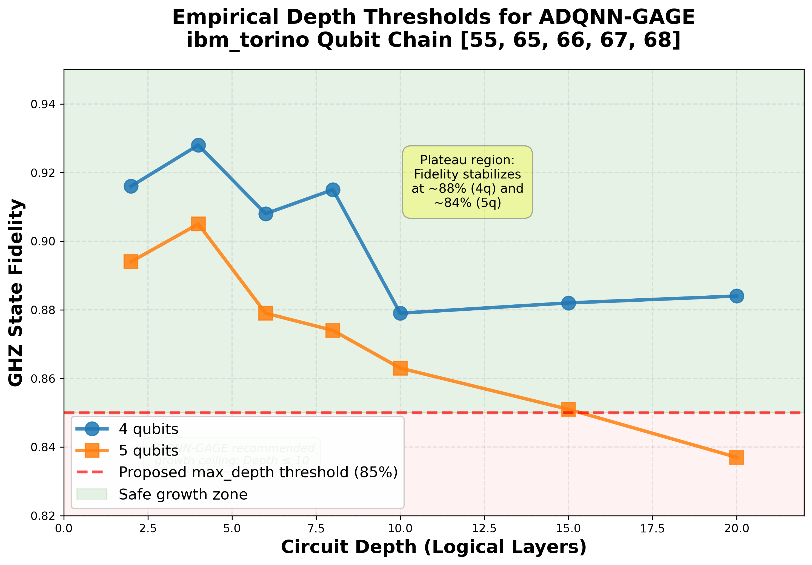

Empirical Noise-Adaptive Circuit-Depth Thresholds on IBM Quantum Heron-Class Devices
An empirical study of logical-depth-dependent fidelity decay on
ibm_torino using 4- and 5-qubit GHZ-state preparation
circuits.

Abstract
We present an empirical study of circuit-depth thresholds on IBM
Quantum Heron-class hardware using 4- and 5-qubit GHZ-state
preparation circuits with logical depths from 2 to 20. On the
ibm_torino backend, we observe qubit-count-dependent
depth limits: 4-qubit circuits reach a fidelity plateau near 88%
beyond depth 10, while 5-qubit circuits show continued decay from
89.4% to 83.7% over the same range.
The observed fidelity at depth 20 substantially exceeds predictions from an independent gate-error model, indicating coherent error effects and partial cancellation not captured by simple accumulation models. These results support calibration-based depth selection over fixed heuristics for near-term hardware.
Key Findings
4-Qubit Plateau
~88%
Stable fidelity observed beyond logical depth 10.
5-Qubit Decay
89.4% to 83.7%
Continued degradation through increasing circuit depth.
Error Modeling
88% vs. 61%
Experimental results exceeded independent gate-error predictions.
Recommended Depth
≤ 10
Suggested maximum logical depth for >85% fidelity workloads.
Methodology
- IBM Quantum Heron-class hardware backend
- 4- and 5-qubit GHZ-state preparation circuits
- Logical depth sweep from 2 to 20
- Independent gate-error accumulation comparison model
- Empirical fidelity analysis across increasing depth